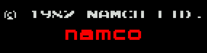
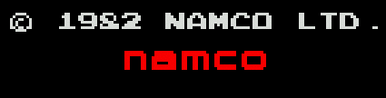
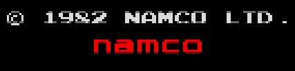
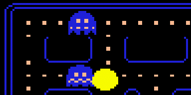
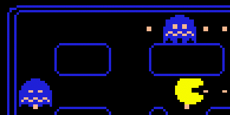
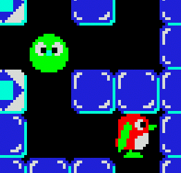
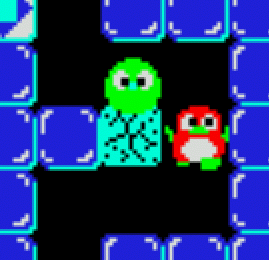
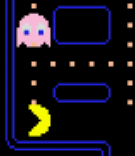

- none This effect simply duplicates and removes rows and lines when the image is stretched
- max This effect tries to save the image details checking the luminosity of the pixels in stretching.
- mean This effect tries to save the image details displaying the mean color of the pixels in stretching.
- filter This effect applies a generic blur filter computing the mean color in the horizontal and vertical directions.
- scale This effect scales the image with an integer factor guessing the missing pixels. Check the Scale2x page.
- lq This effect scales the image with an integer factor guessing and interleaving the border of the missing pixels.
- hq This effect scales the image with an integer factor guessing and interleaving the missing pixels. Check the hq3x page.
Examples
The NAMCO copyright of DigDug (288 rows) displayed in a NTSC screen (240 rows). The image is vertically reduced to allow the displaying on an horizontal TVs.|  | Effect none. Some rows are missing. |
|  | Effect max. No more rows missing, but some details are lost. |
|  | Effect mean. No more rows missing and a lot of details. |
Part of the PacMan screen (288 rows) displayed in a NTSC screen (240 rows). The image is vertically reduced to allow the displaying on an horizontal TVs.
|  | Effect none. Some rows are missing. |
|  | Effect max. No more rows missing. |
Part of the Pengo screen. Integer stretching 2x2.
| Effect none. | Effect filter. Like the original old-fashion Arcade Monitor! |
|  |  |
Part of the PacMan screen. Integer stretching 2x2.
| Effect none. | Effect filter. Like the original old-fashion Arcade Monitor! |

|  |